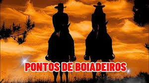

Talvez seja por esse motivo que os boiadeiros têm aquele jeito meio arredio. São Entidades de poucas palavras. Essa é a maneira como os boiadeiros se manifestam na Umbanda. Porque eles, assim como os Caboclos, falam o mínimo necessário. Afinal de contas, os Boiadeiros estão acostumados a conviver com animais, não é? E para viver no meio de animais, não precisa falar muito. E é por isso que os Boiadeiros, assim como os Caboclos, são espíritos de poucas palavras e de muitas atitude! Eles não falam, eles vão lá e fazem! uma das linhas de entidades de umbanda são os boiadeiros, entidades que quando encarnadas foram alguns que homens do sertão.
Enquanto os Malandros e Baianos são conhecidos pela alegria, os boiadeiros remetem à sisudez. São uma classe de espíritos que tem como principais funções recolher espíritos obsessores, quiumbas, e também atuar na limpeza energética nos terreiros. Essas entidades de linha intermediária trabalham no auxílio de consulentes, tanto nas giras deesquerda como nas de direita..
São ligados ao orixá oxossi , regente das florestas e das matas. Apesar da aparência agressiva, forte e valente, os Boiadeiros são muito generosos, pacíficos e benevolentes. Além disso, eles utilizam uma linguagem específica que remete ao campo para se comunicarem com o mundo dos vivos.
os pontos cantados de boiadeiros… adivinha só? Falam sobre o quê? A maioria fala de boi, boiada, fenômenos climáticos, tempestades. Os pontos cantados de boiadeiro falam de laço e o chicote, porque esses são os instrumentos que eles usam para os trabalhos espirituais. Vamos ouvir um ponto de boiadeiro aqui para entrar no clima? Jetruá, povo boiadeiro! Xêtro marromba Xetrô! A corda é de laçar o boi!
